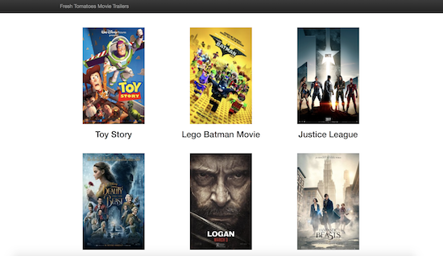

https://github.com/jrios6/Movie_Trailer_Website

This was my first project in the Udacity Full-Stack Nanodegree. I built the website with object-oriented Python to display a list of popular movies, inspired by Rotten Tomatoes. Upon pressing the movie poster, users will be able to watch a Youtube trailer
for the movie.
Sudoku Solver
https://github.com/jrios6/AI_Sudoku_Solver
This was my first project in the Udacity Artifical Intelligence Nanodegree. I built this Sudoku Solver using AI techniques such as contraint propagation and elimination, with recursive depth-first search, to solve problems the Naked Twins and Diagonal
Sudoku problem.
Isolation Agent
https://github.com/jrios6/AIND-Isolation
This was my second project in the Udacity Artifical Intelligence Nanodegree. I built this Isolation game-playing agent that applies AI techniques such as Alpha-Beta Pruning, Iterative Deepening Search and Minimax Search and a custom evaluation heuristic
to beat the standard Isolation agent.